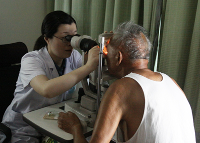
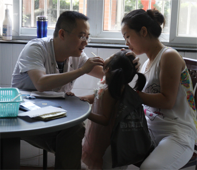
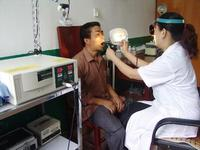
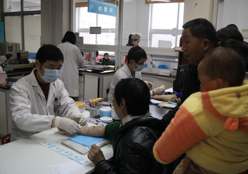
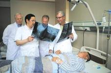
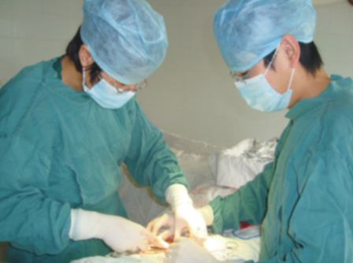
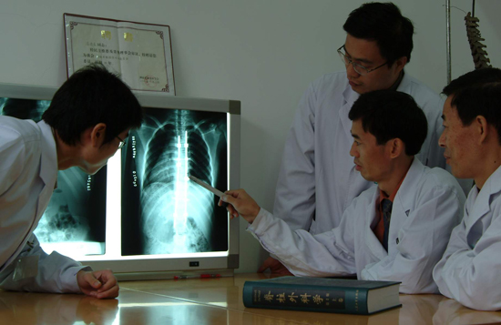

科室介绍
- 内科 内科病区历经60年的发展，已具有相当的规...
-  眼科 内科病区历经60年的发展，已具有相当的规...
-  儿科 内科病区历经60年的发展，已具有相当的规...
- 普外科一（微创外科中心） 内科病区历经60年的发展，已具有相当的规...
-
 放射科
内科病区历经60年的发展，已具有相当的规...
放射科
内科病区历经60年的发展，已具有相当的规...
- 心电、超声科 内科病区历经60年的发展，已具有相当的规...
-  五官口腔科 内科病区历经60年的发展，已具有相当的规...
-  检验科 内科病区历经60年的发展，已具有相当的规...
- 手术室 内科病区历经60年的发展，已具有相当的规...
- 中医科 内科病区历经60年的发展，已具有相当的规...
-  骨科 内科病区历经60年的发展，已具有相当的规...
- 心理卫生门诊 内科病区历经60年的发展，已具有相当的规...
-  肛肠外科 内科病区历经60年的发展，已具有相当的规...
- 中医外科 内科病区历经60年的发展，已具有相当的规...
-  脊柱外科 内科病区历经60年的发展，已具有相当的规...